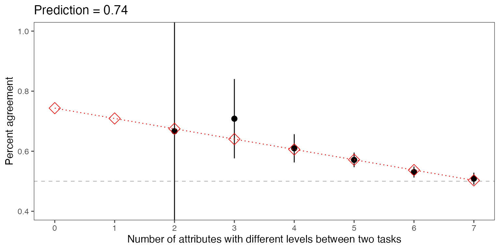

3. Predict Intra-Respondent Reliability (IRR)
predict.Rmd🔎 Step 3: Predict Intra-Respondent Reliability (IRR)
We use two methods to estimate intra-respondent reliability (IRR):
- Best practice: Add a repeated task to your conjoint survey. (Recommended: see Step 1.)
-
Fallback method: Predict IRR through linear
extrapolation using
predict_tau()— no repeated task required!
🚀 Quick Workflow
2. Load or prepare your reshaped data
If you already followed the earlier wrangling step, you can load
out1_arranged:
data(out1_arranged)(If you need to see how to create this, revisit Wrangle Your Data.)
3. Predict IRR via extrapolation
Use predict_tau() to estimate IRR:
predicted_irr <- predict_tau(out1_arranged)4. Explore the IRR estimate
Print the IRR prediction:
print(predicted_irr)## Tau estimated using the extrapolation method: 0.743Summarize IRR across attribute differences:
summary(predicted_irr)## # A tibble: 8 × 2
## x predicted
## <int> <dbl>
## 1 0 0.743
## 2 1 0.709
## 3 2 0.675
## 4 3 0.640
## 5 4 0.606
## 6 5 0.572
## 7 6 0.537
## 8 7 0.503Plot the extrapolated IRR visually:
plot(predicted_irr)
📘 Notes
- The predicted tau
()
shows the estimated reliability when profiles are
identical (
x=0differences). - Prediction is less precise than having a repeated task, but often quite usable.
- You can fix tau manually if you prefer by supplying
.irr =directly toprojoint()later.
🌟 What’s Next?
Now that you have an IRR estimate, you’re ready to analyze your conjoint experiment with measurement error correction!
➡️ Continue to: Estimate MMs and AMCEs